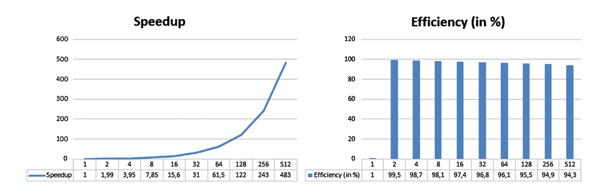
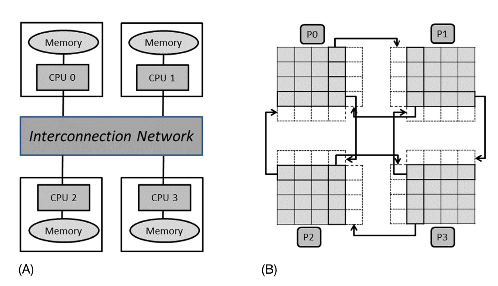
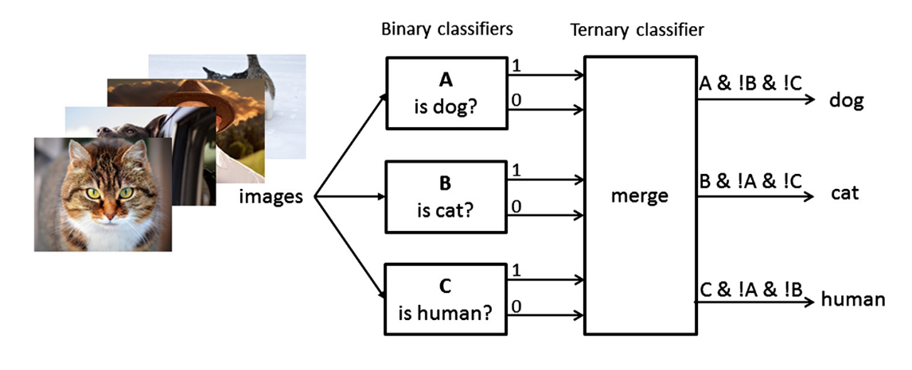
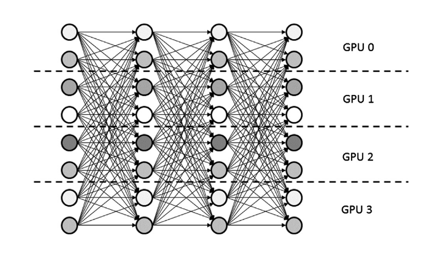

Programación Paralela
Información sobre el curso
- Libro: "Parallel Programming", Schmidt, Gonzalez-Dominguez, Hundt, Schlarb
- El libro usa el lenguaje C++, nosotros usaremos C
- Las evaluaciones serán en forma de 3 tareas y un proyecto final (si hay tiempo).
Programa del curso
- Introducción
- Fundamentos Teóricos
- Cache, vectorización (SIMD)
- OpenMP
- MPI
- Proyecto Final
Introducción
- Repaso del lenguaje C
- Instalación de librerias, uso de Kosmos
- Motivación
- Conceptos básicos
- Memoria distribuida/compartida
- Diseño de algoritmos paralelizados
Repaso del lenguaje C
El proceso de compilación

Hola Mundo
#include <stdio.h>
int main(){
printf("Hola Mundo!\n");
}Tipos básicos de datos
int: números enteros (2 o 4 bytes)unsigned int: números enteros positivos (2 o 4 bytes)float: números reales (4 bytes)double: números reales (8 bytes)long double: números reales (16 bytes)char: carácteres (número entero que es el código de un carácter, 1 byte)void: nada
Tipos básicos de datos
Ejercicio:
- ¿Cuánto es el rango de valores que se puede guardar en un
intde 2 bytes? - ¿en un
uintde 2 bytes?
Tipos enteros

Tipos reales

Imprimir valores de variables
#include <stdio.h>
int main(){
int numero1 = -3;
uint numero2 = 4;
float numero3 = 3.141;
double numero4 = 3.141;
printf("%d %u %f %lf\n",numero1,numero2,numero3,numero4);
}Especificadores de formato

#include <stdio.h>
int main(){
float numero3 = 3.141;
double numero4 = 3.141;
printf("%.6f %.10lf\n",numero3,numero4);
}Tamaños de variables
#include <stdio.h>
int main(){
int numero1;
unsigned int numero2;
float numero3;
double numero4;
long double numero5;
printf("%lu %lu %lu %lu %lu\n",sizeof(numero1),sizeof(numero2),
sizeof(numero3),sizeof(numero4),
sizeof(numero5));
}Variables enteros de tamaño fijo
#include <stdio.h>
#include <stdint.h>
int main(){
uint8_t numero1;
uint16_t numero2;
uint32_t numero3;
uint64_t numero4;
int64_t numero5;
printf("%lu %lu %lu %lu %lu\n",sizeof(numero1),sizeof(numero2),
sizeof(numero3),sizeof(numero4),
sizeof(numero5));
}Estructuras (tipos derivados)
#include <stdio.h>
struct vector{
int x, y, z;
};
int main(){
struct vector v;
v.x = 10;
v.y = 12;
v.z = 15;
printf("%d %d %d",v->x,v->y,v->z);
}Memoria ocupada por una estructura
#include <stdio.h>
struct datos1
{
short s; // 2 bytes + 2 padding
int i; // 4 bytes
char c; // 1 byte + 3 padding
};
struct datos2
{
int i; // 4 bytes
char c; // 1 byte
short s; // 2 bytes + 1 padding
};
int main(){
struct datos1 d1;
struct datos2 d2;
printf("%lu %lu\n",sizeof(d1),sizeof(d2));
}Otros tipos: uniones
#include <stdio.h>
union datos{
int i;
float f;
double g;
};
int main(){
union datos d;
datos.i = 10;
datos.f = 24.2;
datos.g = 345.6;
printf("%d\n",datos.i);
printf("%f\n",datos.f);
printf("%f\n",datos.g);
printf("%lu\n",sizeof(d));
}Otros tipos: enums
#include <stdio.h>
enum semana{lun, mar, mie, jue, vie, sab, dom};
int main(){
enum semana dia;
dia = mie;
printf("%d\n",dia);
printf("%lu\n",sizeof(dia));
}Punteros
#include <stdio.h>
int main(){
int x = 10;
int* p;
p = &x;
printf("%d %d\n",x,*p);
printf("%lu %lu\n",sizeof(x),sizeof(p));
}Arrays
#include <stdio.h>
int main(){
int x[4];
x[0] = 1;
x[1] = 10;
x[2] = 20;
x[3] = 40;
printf("%d %d %d %d\n",x[0],x[1],x[2],x[3]);
printf("%lu\n",sizeof(x));
}Arrays y su relación con punteros
#include <stdio.h>
int main(){
int x[4];
x[0] = 1;
x[1] = 10;
x[2] = 20;
x[3] = 40;
printf("%d %d %d %d\n",*x,*(x+1),*(x+2),*(x+3));
}Arrays y su relación con punteros
#include <stdio.h>
#include <stdlib.h>
int main(){
int* x;
x = malloc(4*sizeof(int));
x[0] = 1;
x[1] = 10;
x[2] = 20;
x[3] = 40;
printf("%d %d %d %d\n",*x,*(x+1),*(x+2),*(x+3));
}Funciones
#include <stdio.h>
int sumar_numeros(int a, int b){
return a+b;
}
int main(){
int x = 19;
int y = 20;
int z;
z = sumar_numeros(x,y);
printf("%d %d %d\n",x,y,z);
}Funciones
#include <stdio.h>
int sumar_numeros(int a, int b){
return a+b;
}
int main(){
int x = 19;
int y = 20;
int z;
z = sumar_numeros(x,y);
printf("%d %d %d\n",a,b,z);
}¿Cuál es el error aquí?
Visibilidad (scope)
- Las variables en
mainson visibles solamente enmain - Las variables en
sumarson visibles solamente ensumar - Una variable (de cualquier tipo: básica, estructura, unión, enum) declarada fuera de cualquier función (incluyendo
main) tiene visibilidad en todo el código. - Se llama una variable global (las otras variables son locales).
Array global
#include <stdio.h>
#include <stdlib.h>
#define N 10000000; // diez millones
double x[N];
int main(){
printf("%lu\n",sizeof(x));
}Ejercicio: imprimir el tamaño del array x a la pantalla en MB.
Array local
#include <stdio.h>
#include <stdlib.h>
#define N 10000000; // diez millones
int main(){
double x[N]; // declarada dentro de "main" ahora
printf("%lu\n",sizeof(x));
}¿Este programa corre?
Stack vs. heap
- La versión con array local no funciona por limitación de espacio de memoria asignada al proceso (programa).
- Cada proceso tiene memoria de tipo stack y memoria de tipo heap
Stack vs. heap


El espacio de stack está limitado para cada proceso. En linux se puede usar ulimit -a para ver cuanto hay.
Array local asignado al heap
#include <stdio.h>
#include <stdlib.h>
#define N 10000000; // diez millones
int main(){
double* x = malloc(N*sizeof(double)); // usando el heap
printf("%lu\n",sizeof(x));
}Poblando un array
#include <stdio.h>
int main(){
int x[5] = {1,2,3,4,5};
printf("%d %d %d %d %d\n",x[0],x[1],x[2],x[3],x[4]);
}Ciclos for
#include <stdio.h>
int main(){
int x[5];
for (int i = 0; i < 5; i++){ //Valido para C99 en adelante
x[i] = i+1;
}
for (int i = 0; i < 5; i++){
printf("%d ",x[i]);
}
printf("\n");
}Arrays con más dimensiones
#include <stdio.h>
#include <stdlib.h>
int main(){
int xN = 4;
int yN = 4;
double phi[xN][yN];
printf("%lu\n",sizeof(phi));
}Organización de la memoria

- Arrays en C están guardados en "orden de fila mayor" (row-major order).
phi[xN][yN]corresponde a un array de punteros...
malloc con arrays bidimensional
#include <stdio.h>
#include <stdlib.h>
int main(){
int xN = 4;
int yN = 4;
// Espacio unidimensional en la memoria
double* phi = malloc(xN*yN*sizeof(double));
printf("%lu\n",sizeof(phi));
}Aritmetica de índices
#include <stdio.h>
#include <stdlib.h>
int main(){
int xN = 4;
int yN = 4;
double phi1[xN][yN];
double* phi2 = malloc(xN*yN*sizeof(double));
for (int i = 0; i < xN; i++){
for (int j = 0; j < yN; j++){
phi1[i][j] = i+j;
}
}
for (int i = 0; i < xN; i++){
for (int j = 0; j < yN; j++){
phi2[i*yN + j] = i+j;
}
}
for (int i = 0; i < xN; i++){
for (int j = 0; j < yN; j++){
printf("%d %d %d %f %f\n",i,j,i*yN+j,phi1[i][j],phi2[i*yN + j]);
}
}
}Pasar por valor
#include <stdio.h>
int actualizar_x(int x){
return x+1;
}
int main(){
int x = 10;
int y;
y = actualizar_x(x);
printf("%d %d\n",x,y);
}Pasar por referencia
#include <stdio.h>
void actualizar_x(int* x){
*x += 1;
}
int main(){
int x = 10;
int* p;
p = &x;
printf("%d\n",x);
actualizar_x(p);
printf("%d\n",x);
}Pasando un array a una función
#include <stdio.h>
#include <stdio.h>
void poblar_array(int* arr, int N){
for (int i = 0; i < N; i++){
arr[i] = i;
}
}
int main(){
int N = 10;
int* x = malloc(N*sizeof(int));
for (int i = 0; i < N; i++){
printf("%d ",x[i]);
}
printf("\n");
poblar_array(x, N);
for (int i = 0; i < N; i++){
printf("%d ",x[i]);
}
printf("\n");
}
Pasando un array a una función
Ejercicio: poblar un array bidimensional usando una función (pasando por referencia). Hay varios métodos...
Argumentos del terminal
#include <stdio.h>
#include <stdlib.h>
int main(int argc, char *argv[]){
printf("Hola Mundo! El numero es %c\n",*argv[1]);
}Argumentos del terminal
#include <stdio.h>
#include <stdlib.h>
int main(int argc, char *argv[]){
int numero;
if (argc < 2 || argc > 2){
printf("Para correr el programa escribir: ./hola_mundo_numero <numero>\n");
exit(1);
}
numero = atoi(argv[1]);
printf("El numero es %d\n",numero);
}Instalación de librerias, uso de Kosmos
Compiladores, librerias (Linux)
- Compilador: gcc (viene por defecto en Linux)
- Instrucciones vectoriales:
more /proc/cpuinfo | grep avx - OpenMP:
sudo apt-get install libomp-dev(puede venir con el compilador)
sudo apt install openmpi-bin openmpi-dev openmpi-common openmpi-doc libopenmpi-devVerificar existencia de GCC y MPI
gcc --versionmpicc --versionVerificar existencia de OpenMP
#include <stdio.h>
#include <omp.h>
int main(){
#pragma omp parallel
{
int n;
n = omp_get_num_threads();
printf("Numero threads: %d\n",n);
}
}Compilar con gcc verificar_openmp.c -o verificar_openmp.x -fopenmp
Uso de Kosmos
- Kosmos es el cluster del IFA.
- Para tener acceso hay que mandar un correo a Edgar con el archivo
$HOME/.ssh/id_rsa.pub. - Si el archivo no existe, genéralo con "ssh-keygen" (no usar sudo!).
- Después Edgar creará una cuenta en Nebula y Kosmos.
- El acceso es con
ssh <username>@nebula.ifa.uv.cly después (en Nebula)ssh <username>@kosmos.ifa.uv.cl.
Uso de Kosmos
Cuando tengan sus cuentas en Kosmos veremos como lanzar trabajos en los servidores usando SGE (Sun Grid Engine, sistema de cola).
Motivación - ¿por qué paralelizar?
Ejemplo - simulaciones numéricas

Ejemplo - simulaciones numéricas
Illustris (simulación cosmológica): 8192 cores, 19 millones de horas CPU.
Ejemplo - análisis de datos

Conceptos básicos
Metricas
- Speedup: $S = T(1)/T(p)$ donde $T(p)$ es el tiempo de ejecución en $p$ procesadores.
- Eficiencia: $E = S/p = T(1)/(T(p) \times p)$
- Costo: $C = T(p) \times p$
- Escalabilidad, fuerte: como cambia la eficiencia con una cantidad fija de datos, variando $p$.
- Escalabilidad, débil: como cambia la eficiencia, variando la cantidad de datos y $p$.
- Razón de cómputo-a-comunicación: tiempo ocupado para cálculos dividido por tiempo ocupado en comunicación.
Ejemplo simple: sumar un array
Calcular $\sum_{i=0}^{n-1} A[i]$ en $p$ elementos de procesamiento (EP). Suposiciones:
- Cómputo: cada EP suma dos números en su memoria local en $1$ unidad del tiempo.
- Comunicación: cada EP puede mandar datos de su memoria local al memoria local de otro EP en $3$ unidades del tiempo (independiente de la cantidad).
- Entrada/salida: datos en EP #0 al principio, al final recopilamos el resultado en EP #0.
- Sincronización: todos los EPs operan en forma sincronizada (todos calculan, o todos comunican).
Ejemplo simple: sumar un array
Código secuencial: suma $n$ números en $n-1$ unidades del tiempo. $T(1,n) = n-1$.
Se supone que $n = 2^k$ donde $k$ es un entero positivo.
Ejemplo simple: sumar un array
Código paralelo en $p=2$ EPs:
- EP #0 manda la mitad del array al EP #1: $3$ $[t]$
- Cada EP calcula su suma parcial de $n/2$ elementos: $n/2 - 1$ $[t]$
- EP #1 manda su resultado al EP #0: $3$ $[t]$
- EP #0 suma las dos sumas parciales: $1$ $[t]$
- Tiempo total: $T(2,n) = 3 + n/2 - 1 + 3 + 1$. Para $n=1024$, $T(2,1024) = 518$, entonces el speedup es $T(1,1024)/T(2,1024) = 1.975$ y la eficiencia es $98.75%$.
Ejemplo simple: sumar un array

Ejemplo simple: sumar un array
Código paralelo en $p=4$ EPs:
- EP #0 manda la mitad del array al EP #1: $3$ $[t]$
- EP #0 y EP #1 mandan (cada uno) un cuarto del array a los EPs #2 y #3: $3$ $[t]$
- Cada EP calcula su suma parcial de $n/4$ elements: $n/4 - 1$ $[t]$
- EPs #2 y #3 mandan sus sumas parciales a los EPs #0 y #1: $3$ $[t]$
- EPs #0 y #1 suman sus sumas parciales: $1$ $[t]$
- EP #1 manda su suma parcial al EP #0: $3$ $[t]$
- EP #0 suma las dos sumas parciales: $1$ $[t]$
- Tiempo total: $T(4,n) = 3 + 3 + n/4 - 1 + 3 + 1 + 3 + 1$. Para $n=1024$, $T(4,1024) = 269$, entonces el speedup es $T(1,1024)/T(4,1024) = 3.803$ y la eficiencia es $95.07%$.
Ejemplo simple: sumar un array

Ejemplo simple: sumar un array
Código paralelo en $p=8$ EPs:
Tiempo total:
$$T(8,n) = 3 + 3 + 3 + n/8 - 1 + 3 + 1 + 3 + 1 + 3 + 1$$
Para $n=1024$, $T(8,1024) = 148$, entonces el speedup es $T(1,1024)/T(8,1024) = 6.91$ y la eficiencia es $86%$.
Ejemplo simple: sumar un array
Código paralelo en $p = 2^q$ EPs:
- Tiempo de distribución de los datos: $3q$
- Cómputo sumas locales: $n/p - 1 = 2^{k-q} - 1$
- Recopilación de resultados parciales: $3q$
- Suma de resultados parciales: $q$
Tiempo total: $$T(p,n) = T(2^q,2^k) = 3q + 2^{k-q} - 1 + 3q + q = 2^{k-q} - 1 + 7q$$
$p \ll n \Rightarrow k \gg q$ y el término que viene del tiempo de cómputo $2^{k-q}$ domina (eficiencia es alta).
$p \approx n \Rightarrow k \approx q$ y el término que viene del tiempo de comunicación $7q$ domina (eficiencia es baja).
Ejemplo simple: sumar un array

Algoritmo no tiene escalabilidad fuerte
Ejemplo simple: sumar un array
Análisis de escalabilidad débil: aumentar la cantidad de elementos (de $1024$ a $524.288$) mientras aumentamos el número de elementos de procesamiento (de $1$ a $512$).
Ejemplo simple: sumar un array
Algoritmo tiene escalabilidad débil.
Caso general
$\alpha > 0$ (tiempo de cómputo), $\beta > 0$ (tiempo de comunicación) [antes tuvimos $\alpha = 1$, $\beta = 3$]. Formula general:
$T_{\alpha,\beta}(2^q,2^k) = \beta q + \alpha (2^{k-q} - 1) + \beta q + \alpha q = 2\beta q + \alpha (2^{k-q} - 1 + q)$
Speedup: $$S_{\alpha,\beta}(2^q,2^k) = \frac{T_{\alpha,\beta}(2^0,2^k)}{T_{\alpha,\beta}(2^q,2^k)} = \frac{\alpha(2^k - 1)}{2\beta q + \alpha (2^{k-q} - 1 + q)}$$
Razón de cómputo-a-comunicación
$\gamma = \alpha/\beta$. En el límite $\gamma \to 0$ el speedup tiende a cero (para $q > 0$):
$$S_{\gamma}(2^q,2^k) = \frac{\gamma(2^k - 1)}{2q + \gamma(2^{k-q} - 1 + q)}$$ y $$\lim_{\gamma \to 0} S_{\gamma}(2^q,2^k) = 0$$
Razón de cómputo-a-comunicación
Suponiendo $k > 0$, $A(k) = 2^k - 1 > 0$ y $B(q,k) = 2^{k-q} - 1 + q > 0$
$\frac{d}{d\gamma} S_{\gamma}(2^q,2^k) = \frac{d}{d\gamma} \frac{\gamma A(k)}{2q + \gamma B(q,k)} = \frac{2qA(k)}{(2q + \gamma B(q,k))^2} > 0$
Reducción de $\gamma$ reduce $S$ independientemente del número de elementos de procesamiento (i.e. mayor tiempo de comunicación implica menos speedup).
Caso general, speedup máximo
Considerando $S_{\gamma}(2^q,2^k)$ como una función de $q$, hay un máximo local en $p = \frac{\gamma \ln 2}{2+\gamma}n$:
$\frac{d}{dq} S_{\gamma}(2^q,2^k) = \frac{d}{dq} \frac{\gamma A(k)}{2q + \gamma (2^{k-q} - 1 + q)} = -\frac{\gamma A(k)(2-\gamma 2^{k-q}\ln 2 + \gamma)}{(2q + \gamma (2^{k-q} - 1 + q))^2} \stackrel{!}{=} 0$
Entonces $2 + \gamma - \gamma 2^{k-q} \ln 2 \stackrel{!}{=} 0$ implica que $2^q = \frac{\gamma \ln 2}{2 + \gamma}2^k$.
Para $\gamma = 1/3$ y $n = 1024$ como en nuestro ejemplo, $p \approx 100$ provee un speedup optimo.
Conclusiones de este ejemplo
- El speedup depende tanto del número de elementos de procesamiento como $\gamma$.
- El speedup típicamente aumenta con más EPs, hasta un máximo local. Más allá de eso, la comunicación reduce la eficiencia.
- Un speedup optimo depende de $\gamma$. Tiempos de comunicación más largos implican que es mejor usar menos EPs.
- La eficiencia de la paralelizacion depende del número de EPs y $\gamma$. Es una función monótona en ambos parámetros.
Memoria distribuida/compartida
Sistemas con memoria distribuida

Sistemas con memoria distribuida
Cada EP tiene acceso directo solamente a su memoria local. Para acceder datos en la memoria de otro EP hay que implementar comunicación explícitamente.
Los CPUs están conectados a través de una red de interconexión (Infiniband, ethernet).
Acceso a datos en remoto puede ser comunicación punto-a-punto entre dos CPUs, o comunicación colectiva entre un grupo de CPUs.
Ejemplo punto-a-punto: CPU 1 llama una función para mandar datos a CPU 2, CPU 2 llama una función para recibir los datos.
Ejemplos de comunicación colectiva: un broadcast (transmisión) de datos de un CPU a todos los otros; cálculo de la suma global de una variable guardada en todos los CPUs.
Sistemas con memoria distribuida
Para la programación paralela en memoria distribuida la solución más común es MPI (Message Passing Interface).
MPI crea un número fijo de procesos al principio del programa (e.g. un proceso por CPU).
Intercambios de datos punto-a-punto entre dos procesos se realizan con MPI_Send y MPI_Recv, mientras comunicación colectiva se realiza con MPI_Bcast, MPI_Reduce, MPI_Gather, MPI_Scatter.
Sistemas con memoria distribuida
La partición de los datos es un problema clave en la programación de sistemas con memoria distribuida.
Ejemplo de una partición un array $8 \times 8$ en $4$ procesos: cada uno tiene una submatriz $4 \times 4$.
Sistemas con memoria distribuida

Código de plantilla (stencil): plantilla de 5 puntos requiere que cada proceso guarde una fila y columna adicional, para recibir datos de otro proceso. También tiene que mandar una fila y columna a otro proceso.
Caso de estudio: ecuación de Poisson
Vamos a ver varias veces en el curso como solucionar la ecuación de Poisson numericamente, usando un algoritmo paralelizado.
Por ahora vamos a estudiar (en términos generales) como se puede implementar un algoritmo así en un sistema de memoria distribuida.
La ecuación: $\nabla^2 \phi(x,y) = \rho(x,y)$ (electrostática, gravedad Newtoniana).
Caso de estudio: ecuación de Poisson
Vamos a resolver la ecuación en una grilla discretizada:

Paralelismo básico: sistemas de memoria compartida
Todos los CPUs tienen acceso a un espacio común de memoria. Ejemplo: notebook con procesador de multinúcleo (Intel i3, i5, i7 etc.)
Cada core típicamente tiene memoria (super-)local (cache de nivel 1) para reducir acceso a la memoria principal (cuello de botella de von Neumann).

Paralelismo básico: sistemas de memoria compartida
Con memoria compartida típicmente se utiliza multithreading.

Paralelismo básico: sistemas de memoria compartida
Los hilos (threads) comparten memoria simultaneamente: hay que tener cuidado para evitar condiciones de carrera (race conditions).
Este es cuando dos hilos acceden a la misma variable compartida simultaneamente (sin locking o sincronización).
Paralelismo básico: sistemas de memoria compartida
Estudiaremos programación de multithread con OpenMP: ocupa pragmas para automatizar la paralelización.
Pragmas son directivas al preprocesador para generar código de multithread para el compilador.
Arquitecturas de aceleradores (co-procesadores y GPU): miles o millones de threads (Programación GPU, próximo semestre)
Aspectos del diseño de un algoritmo paralelizado
- Partición: hay que descomponer el problema en partes: paralelismo de datos, paralelismo de tareas, paralelismo del modelo.
- Comunicación: la forma de dividir el problema determina el tipo y frecuencia de comunicación requerida entre procesos y/o threads.
- Sincronización: quizás será necesario en ciertos puntos del algoritmo.
- Balanceo de carga (load balancing): hay que dividir el trabajo igualmente entre los procesos/threads para optimizar el uso de recursos.
Diseño del algoritmo: como paralelizar
Se puede paralelizar cálculos completamente independientes fácilmente (embarrassingly parallel problems). Otros son más difíciles...
Considerar la suma cumulativa:
for (i=1; i<n; i++) A[i] = A[i] + A[i-1]Una opción: dividir el array entre los procesadores, cada procesador calcula su suma cumulativa local. Los resultados están guardados en otro array y se calcula una segunda suma cumulativa. Este proceso toma $\log_2(p)$ pasos en paralelo.
Diseño del algoritmo: como paralelizar

Diseño del algoritmo: partición de datos
Considerar el código de stencil que vimos antes. La partición de datos determina la estrategia de comunicación.
Embarrassingly parallel problems involucran operaciones independientes (sin comunicación) y son fáciles de paralelizar.
Diseño del algoritmo: sincronización
Considerar el código de stencil que vimos antes. Quizás será necesario sincronizar para asegurar que todos los valores en las filas/columnas comunicadas estén calculados antes de mandar/recibir.
Diseño del algoritmo: paralelismo de tareas
Asignar tareas distintas a cada proceso/thread.
Ejemplo con clasificación de imágenes: clasificador binario diferente en cada procesador, con los resultados combinados al final.
Diseño del algoritmo: balanceo de carga
Supongamos que la clasificación "humano/no humano" demora más que las otras dos.
En un diseño con paralelismo de tarea P2 demorará más que P0 o P1. Por lo tanto P2 estará trabajando mientras P0 y P1 están sin carga: mal balanceo de carga.
En este caso, políticas de planificación dinámica pueden ayudar.
Diseño del algoritmo: paralelismo de modelo
Redes neuronales grandes y complejas pueden exceder la memoria disponible de un GPU.
Se puede implementar paralelismo del model donde los pesos de la red están distribuidas entre varios GPUs, y cada GPU trabaja en su parte del modelo.
Este requiere que el vector de salida de cada capa de la red entera esté recopilado en cada GPU antes de que se pueda calcular el próximo (i.e. se requiere comunicación y sincronización).
Arquitecturas modernas de HPC
Supercomputadores modernos a menudo combinan memoria distribuida y compartida (con una mezcla de CPUs y GPUs).
Por lo tanto a menudo es necesario combinar varias técnicas:
- Paralelización nivel nodo: memoria distribuida, MPI
- Paralelización entre nodos: memoria compartida, OpenMP
- Paralelización nivel acelerador: GPUs, CUDA